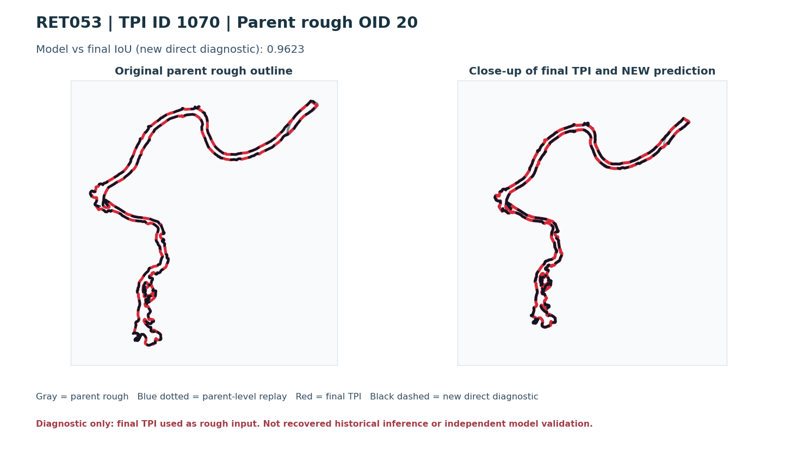
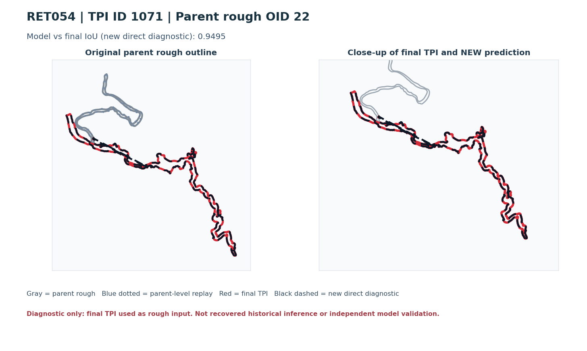

Red final TPI · Black dashed new direct diagnostic prediction · Gray original parent rough · Blue dotted parent-level 702 replay. These direct predictions used the final polygon as the model input and are not independent validation.

